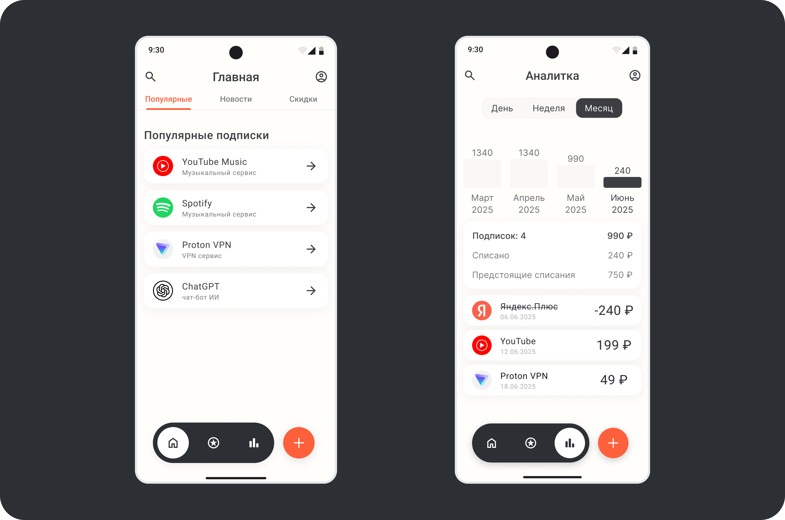
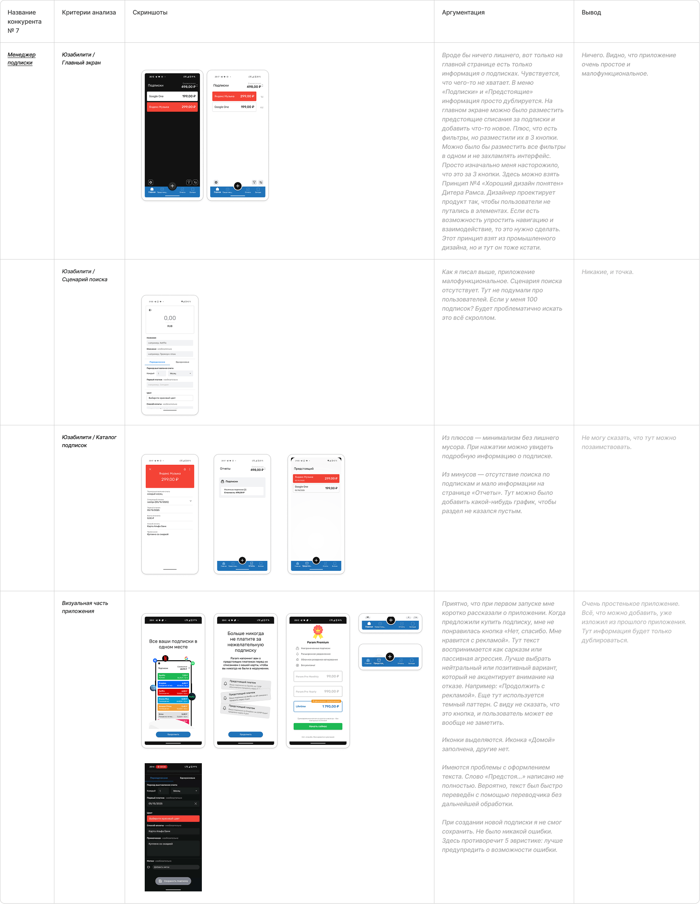
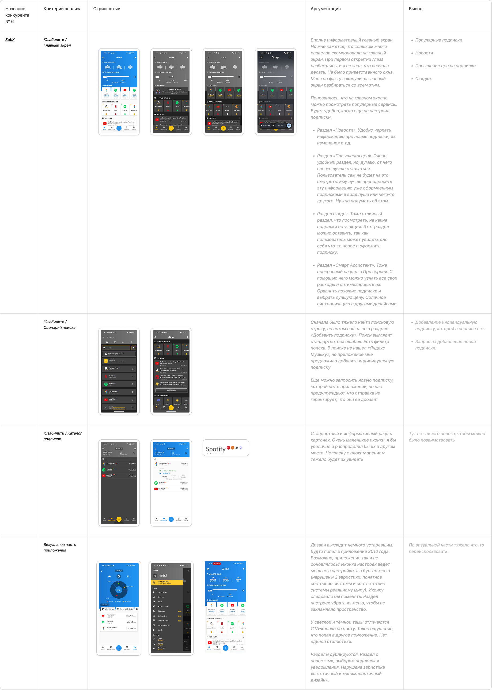
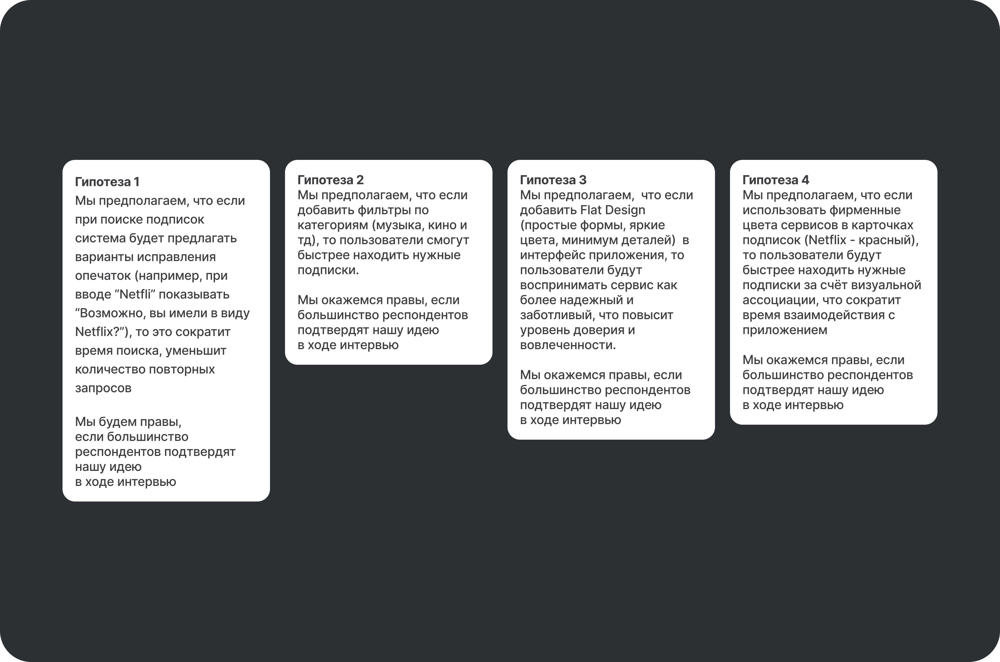
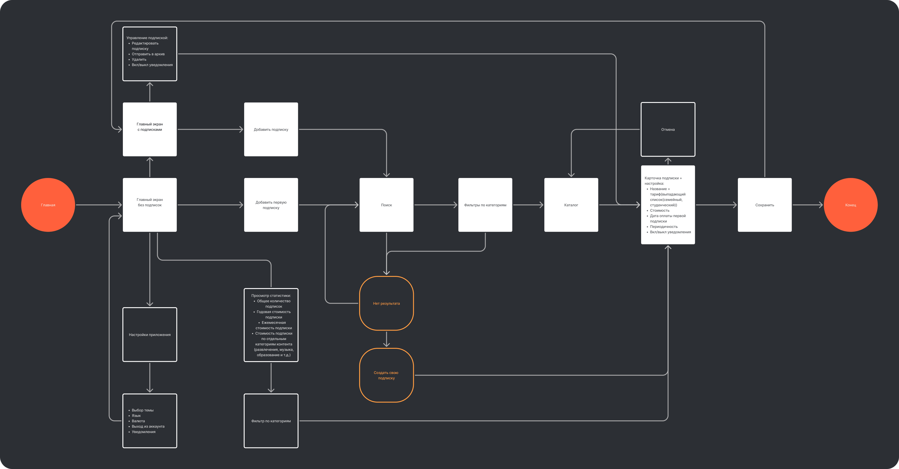
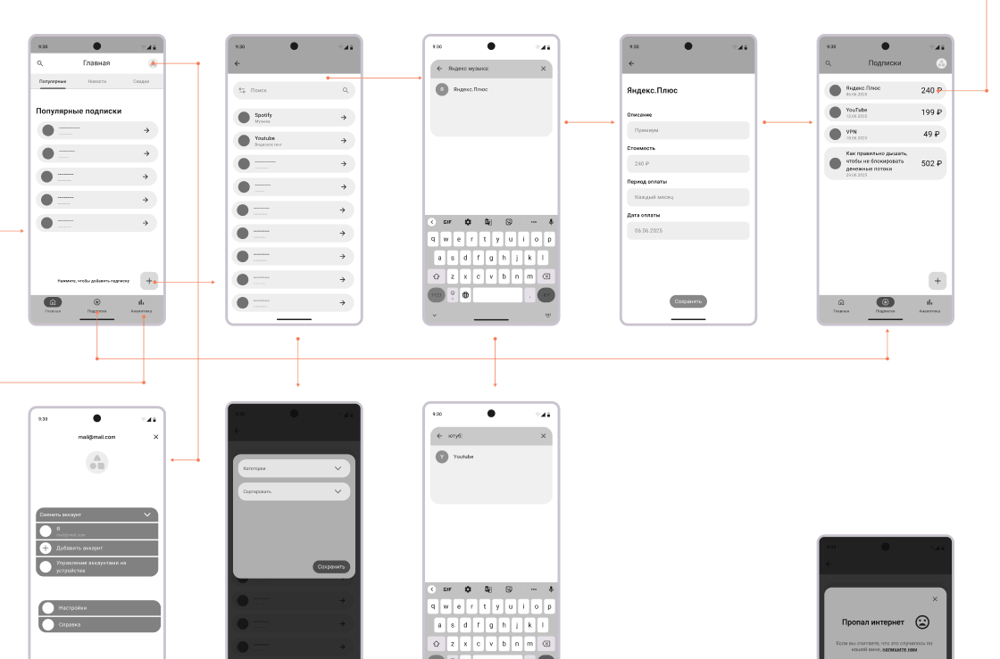
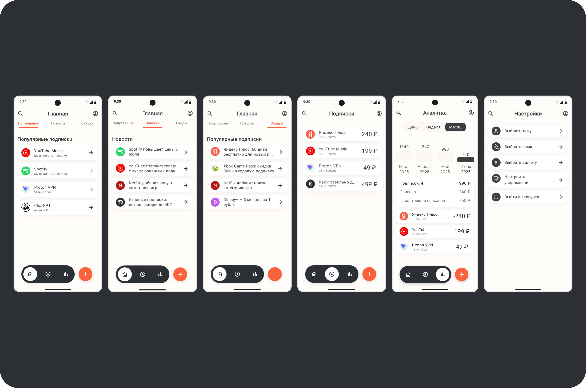
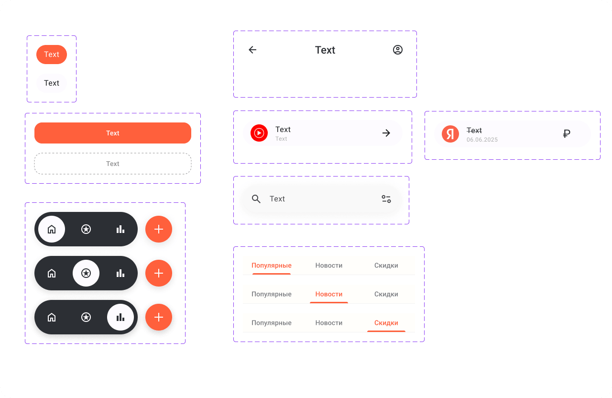

Это мобильное приложение, которое помогает пользователям контролировать все свои платные подписки в одном месте. Оно напоминает о предстоящих списаниях, показывает общие траты и помогает избежать неожиданных расходов.
Цель проекта — сделать управление подписками простым, прозрачным и визуально понятным.

У активных пользователей часто оформлены десятки подписок: от медиасервисов до софта и курсов. Контролировать списания становится сложно: люди забывают отменять ненужные тарифы и регулярно переплачивают.
Цель проекта — создать прозрачный инструмент, который собирает все регулярные траты в одном месте и помогает легко ими управлять.
Анализ конкурентных решений показал ключевые потребности аудитории:


После проработки пользовательских путей сформулированы гипотезы о поиске, визуальной идентификации и навигации. Для их проверки проведены глубинные интервью с потенциальными пользователями.

Если при вводе названия система предлагает варианты автокоррекции (например, при запросе «Netfli» подсказывает «Netflix»), время поиска сокращается, а количество повторных запросов снижается.
Результат: подтвердилась.
Решение: реализован «умный» поиск с подсказками и автоисправлением ошибок.
Категории (музыка, видео, образование, софт) помогают пользователям быстрее ориентироваться в длинном списке подписок.
Результат: подтвердилась.
Решение: внедрены удобные фильтры-чипсы в верхней части экрана.
Простые чистые формы, минимум шума и спокойная палитра повышают доверие к финансовому приложению.
Результат: подтвердилась частично.
Решение: сохранён общий минимализм, но добавлены контрастные фокусные акценты на ключевых действиях.
Использование узнаваемых логотипов и фирменных оттенков ускоряет сканирование списка за счёт зрительных ассоциаций.
Результат: подтвердилась.
Решение: карточки подписок сочетают официальный логотип сервиса и его фирменный цветовой акцент.
Интервью подтвердили, что пользователям необходимы:
Эти решения легли в основу финального дизайна.

На начальном этапе разработаны низкодетализированные экраны для валидации информационной архитектуры и ключевых переходов.

Интерфейс построен на принципах лёгкого минимализма: светлые поверхности, мягкие тени и скруглённые элементы. Вдохновением для палитры послужил культовый телефон Sony Ericsson W800i — тёплая молочная база в сочетании с энергичным оранжевым акцентом.


Создан простой и визуально чистый сервис для управления подписками, который помогает держать расходы под полным контролем.
Ключевые результаты: